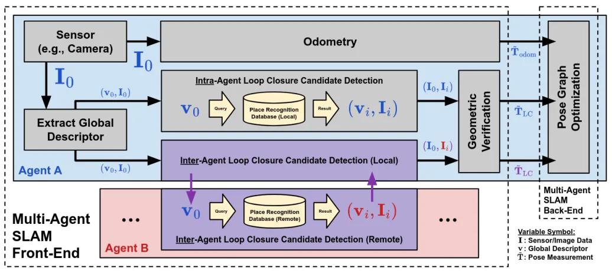
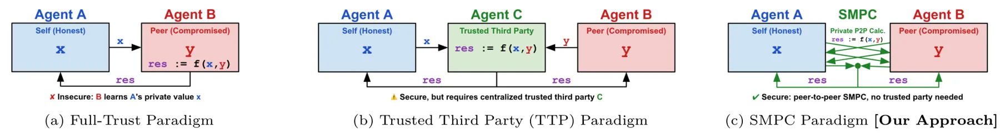
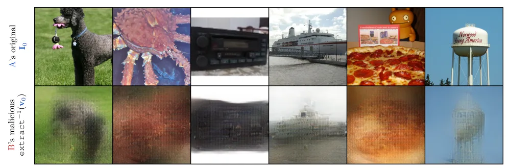
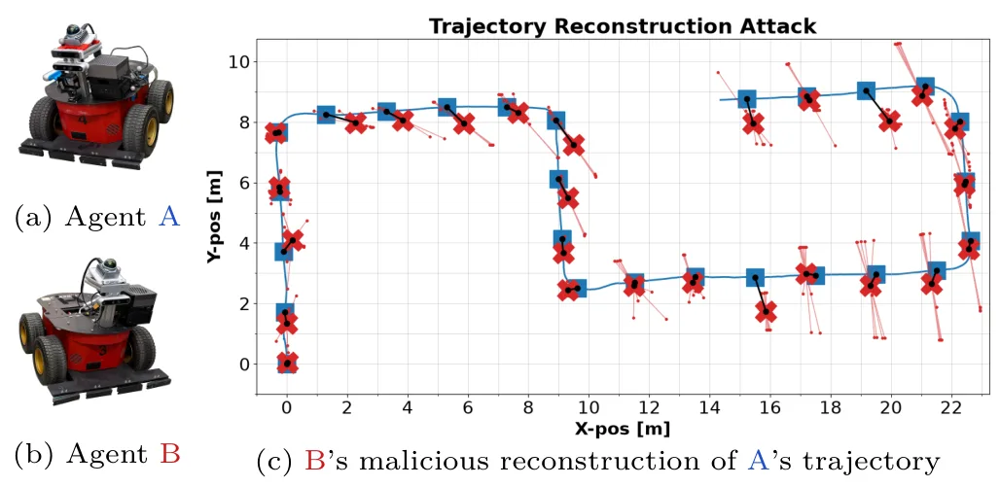
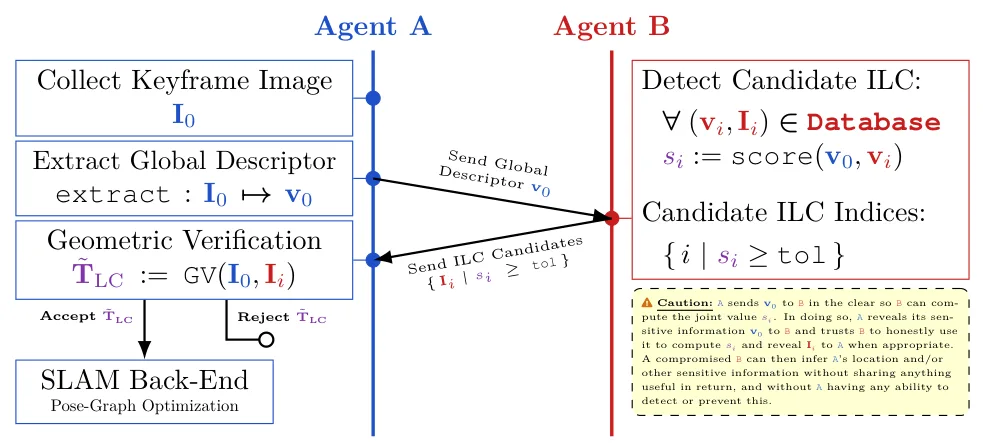
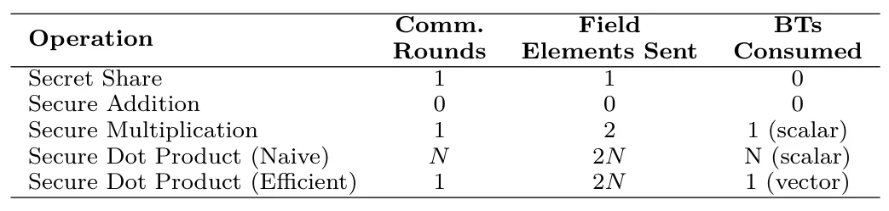
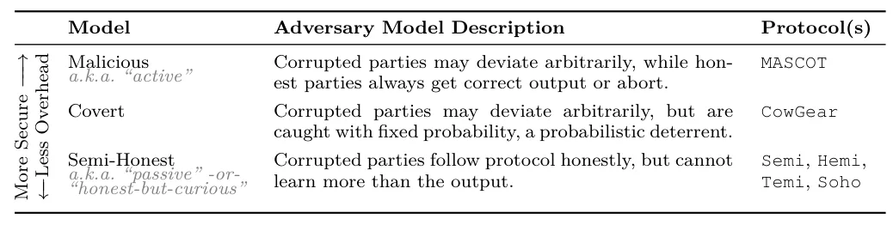
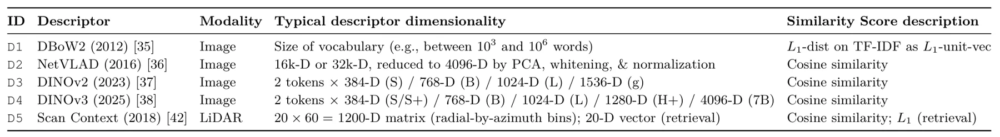
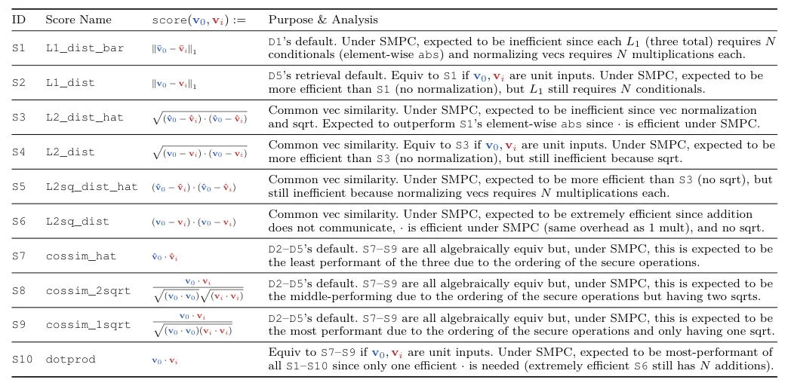
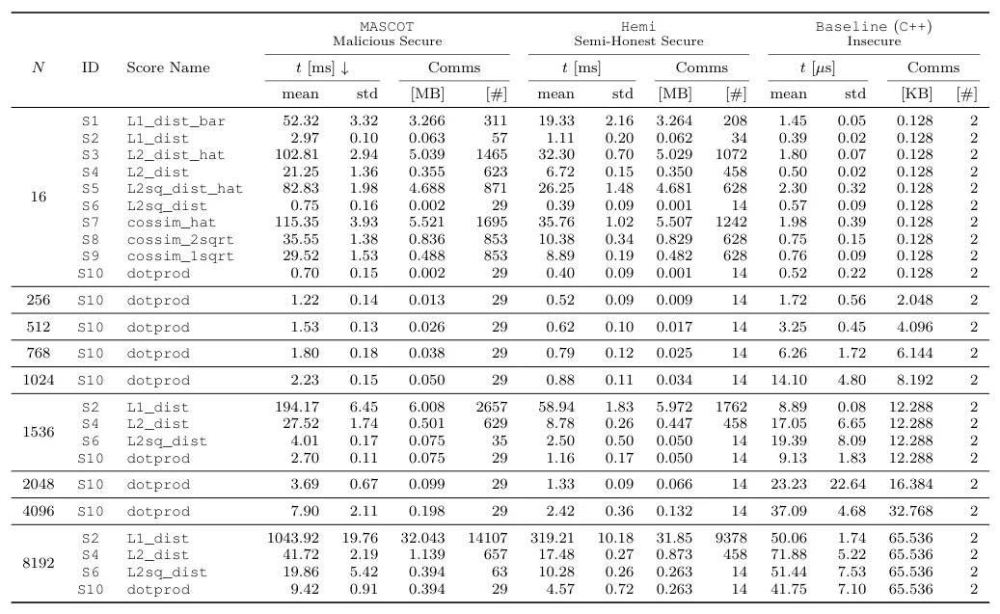

CILC：用于多智能体协同 SLAM 的密码安全跨智能体回环候选检测CILC: Cryptographically-secure Inter-agent Loop Closure Candidate Detection for Multi-Agent Collaborative SLAM
协同 SLAM 安全与隐私是实际多机器人系统的重要但少被覆盖的问题；方法聚焦 ILC 候选检测，工程代价较可控。与定位精度本身间接相关，后续需看扩展规模和后端泄露风险。
一句话工作总结
把 SMPC 引入协同 SLAM 回环候选检测，在不公开全局描述子的情况下比较相似度。
摘要
CILC 关注多智能体/协同 SLAM 中全局描述子广播带来的隐私泄露问题。作者展示被攻陷的群体成员可从诚实机器人公开广播的 global descriptors 中近似重建图像和轨迹，并提出使用安全多方计算（SMPC）只保护 inter-agent loop closure 候选检测中的描述子相似度比较。该设计不试图加密整个 CSLAM pipeline，而是保护最敏感且计算量较轻的环节，并在仿真和硬件实验中验证实时性与通信可行性。
Multi-agent Simultaneous Localization and Mapping (SLAM) and collaborative SLAM (CSLAM) require robots to continuously exchange global descriptors (GDs) to detect inter-agent loop closures (ILCs). While encrypted radios protect this traffic from external eavesdroppers, they offer no protection against a compromised swarm member. We show this threat is concrete by demonstrating how a corrupted agent can reconstruct approximations of an honest agent's imagery and trajectory from its public GD broadcasts. To address this, we propose CILC (Cryptographically-secure Inter-agent Loop Closure candidate detection), a first-of-its-kind system leveraging Secure Multi-Party Computation (SMPC) to detect ILC candidates without exchanging GDs in the clear. Rather than securing the entire CSLAM pipeline, we apply SMPC only to ILC candidate detection (i.e., GD similarity comparison), a privacy-sensitive yet computationally lightweight step, yielding an advantageous privacy-to-overhead trade-off. We validate in both simulation and hardware experiments that CILC remains real-time and communication-feasible across multimodal GDs (visual and LiDAR), while mitigating information leakage to a compromised swarm agent.
中文解读摘录
- 链接：https://arxiv.org/abs/2607.06700 ｜ PDF：https://arxiv.org/pdf/2607.06700
- 中文题名：CILC：用于多智能体协同 SLAM 的密码安全跨智能体回环候选检测
- 关键信息：指出协同 SLAM 中公开广播全局描述子会让被攻陷成员重建诚实机器人图像和轨迹近似；提出用 Secure Multi-Party Computation（SMPC）只保护 inter-agent loop closure 候选检测中的描述子相似度比较。
- 为什么值得看：多机器人 SLAM 过去更多关注通信压缩、回环精度和分布式优化，该文把隐私泄露建模为具体攻击面，并给出仅保护轻量环节的 privacy-to-overhead 折中。
- 需要核查：SMPC 延迟随机器人数量和描述子维度的增长、对 NetVLAD/Scan Context/学习式 LiDAR descriptor 的适配方式、候选召回率是否受加密比较精度影响，以及后续几何验证/位姿图优化是否仍泄露信息。
图表/页面预览

{kind=link}

{kind=link}

{kind=link}

{kind=link}

{kind=link}

{kind=link}

{kind=link}

{kind=link}

{kind=link}

{kind=link}
